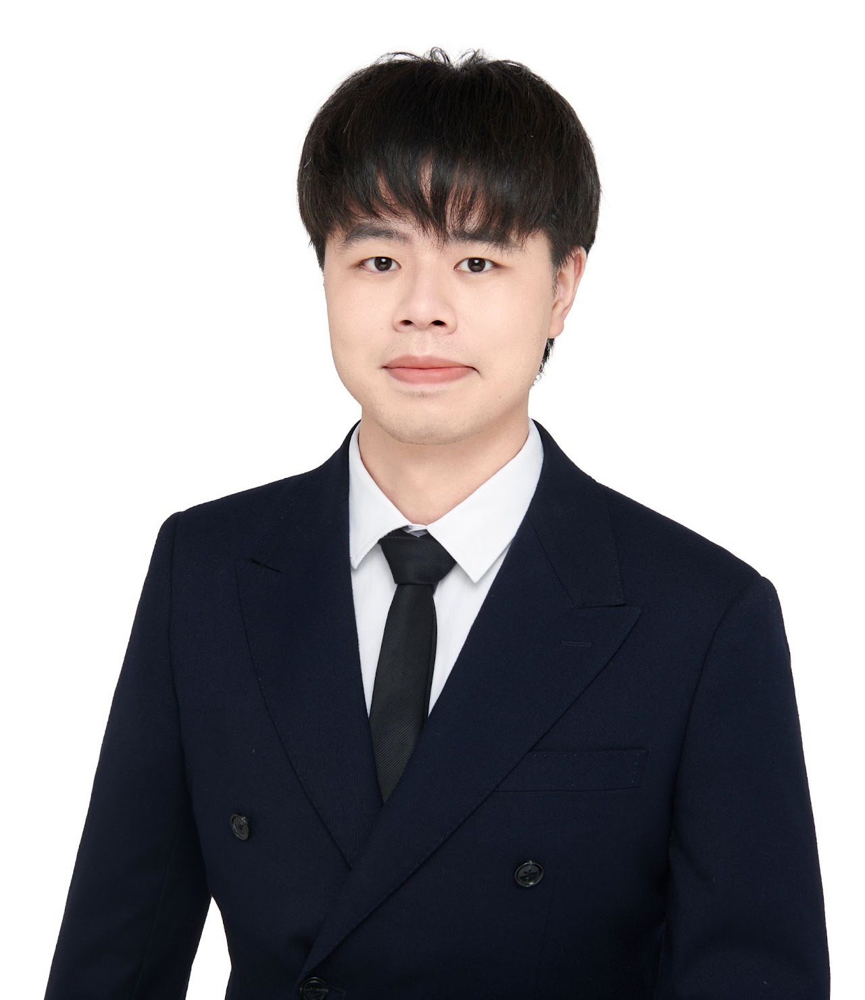

Research Fellow · National University of Singapore
Yu FENG 丰雨
Tactile intelligence for embodied robotics

I am currently a research fellow in the Department of Mechanical Engineering at National University of Singapore, where I work with Prof. Jianshu Zhou in the G&M Lab. My research focuses on tactile intelligence for embodied robotics, with particular interests in multimodal soft sensors, electronic skin, learning-enabled tactile perception, miniature robotics, and human–robot interaction.
I received a B.Eng. degree in Measurement and Control in June 2020 from the College of Automation at Harbin Engineering University, Harbin, China, under the supervision of Prof. Zhiguang Feng. I received my Ph.D. in Mechanical Engineering from City University of Hong Kong, Hong Kong SAR, in September 2024, under the supervision of Prof. Wen Jung Li and Prof. Yajing Shen. From September 2024 to July 2026, I was a postdoctoral fellow with Prof. Wen Jung Li at the WJL Research Group, City University of Hong Kong. I also work closely with Prof. Xinge Yu.
- One first-authored paper gets accepted by IEEE Robotics and Automation Letters (RA-L).
- One first-authored paper gets accepted by ACS Nano.
- One first-authored paper gets accepted by IEEE Transactions on Instrumentation and Measurement (TIM).
- One co-authored paper gets accepted by Chemical Engineering Journal.
- One first-authored paper gets accepted by Advanced Sensor Research.
- One first-authored paper gets accepted by Advanced Science.
- One co-authored paper gets accepted by Nano-Micro Letters.
- One co-authored paper gets accepted by ACS Nano.
- One co-authored paper gets accepted by ACS Applied Electronic Materials.
- One first-authored paper gets accepted by IEEE Open Journal of Nanotechnology.
- One first-authored paper gets accepted by Advanced Functional Materials.
- One co-authored paper gets accepted by Biosensors and Bioelectronics.
- One co-authored paper gets accepted by Micromachines.
- One co-authored paper gets accepted by Advanced Science.
- One co-authored paper gets accepted by Matter.